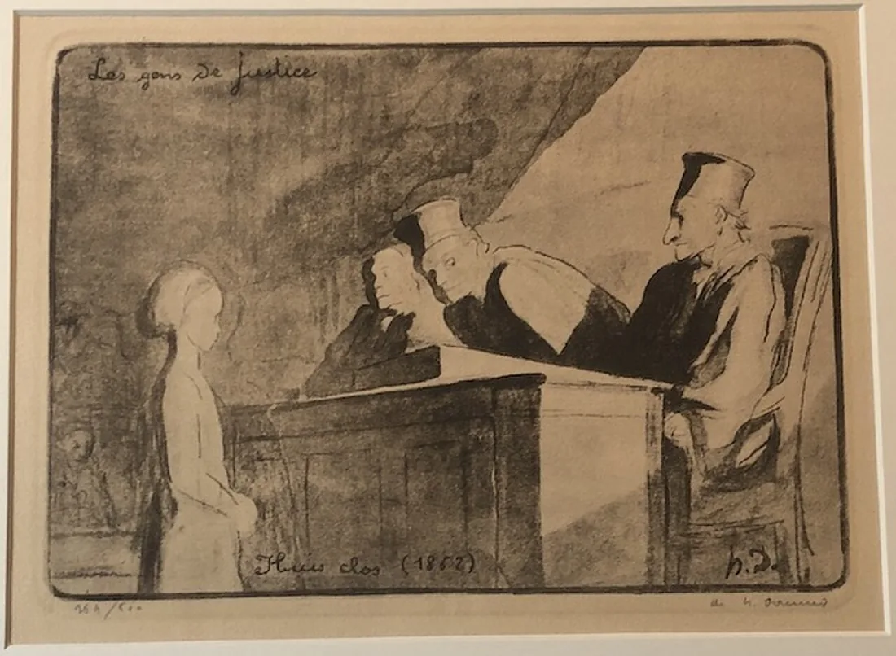

Sessão 07 · Justiça e Direitos
A regra vista de outro lugar
Aceitarias a regra se recebesses menos?
Começar
Recupera
De memória, sem abrir o caderno.
De memória
Nos dois casos do elétrico, o que muda se o número de pessoas é semelhante?
Confirmar
Muda a ação proposta: desviar o elétrico não é o mesmo que empurrar uma pessoa.
A maioria dos votos decide qual razão é mais forte?
Confirmar
Não. A quantidade de votos não resolve a força de uma objeção.
Que objeção te fez pensar mais na sessão anterior?
Vê
Observa primeiro. Lê depois.
Lê o caso. Quem ganha e quem perde com cada decisão?
Exemplo escrito para esta sessão.
Igualdade, necessidade e ordem de chegada são critérios diferentes. Uma regra precisa de poder ser explicada a quem recebe menos. A fonte de direitos ajuda a examinar o que deve ser respeitado.
Decide
Primeiro em silêncio, cada pessoa. Depois em grupo.
Sem ecrã
Primeiro, em silêncio
Escolhe a regra antes de saber que lugar vais ocupar. Indica uma razão a favor e uma dificuldade.
Depois, em grupo
- Distribui as seis sessões de câmara pelos três projetos. Justifica o critério.
- Assume a posição menos beneficiada e apresenta uma objeção.
- Revê a regra. Identifica um direito ou princípio relevante e a sua fonte.
Comparar razões
Aplicar a mesma regra a situações diferentes não garante, por si só, justiça. A objeção pode exigir uma reparação, uma condição ou uma revisão do critério.
Faz
Em papel ou no ficheiro do grupo.
Em papel
Escreve o argumento v2. Introduz a voz de quem suporta o custo e uma informação que contrarie a primeira impressão. Atualiza a fonte que sustenta a revisão.
GuardarArgumento narrativo, versão 2.
Rever com outra pessoa
Explica a diferença entre v1 e v2: regra, objeção e alteração. Outro grupo aponta uma questão em aberto.
Leva
Em papel, antes de sair.
Em papel
Em papel, antes de sair
Numa frase: aceitarias a tua regra se recebesses menos? Porquê?
Confirma
- A regra é justificável.
- A pessoa afetada tem voz.
- A fonte é localizável.
O registo fica neste aparelho.